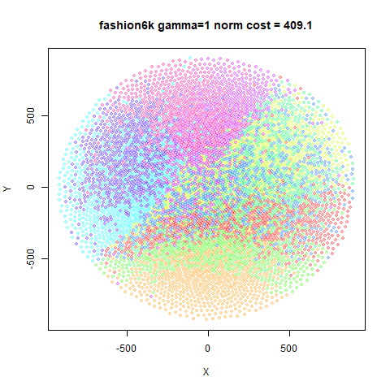
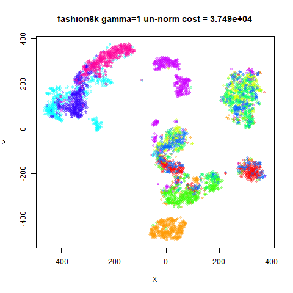
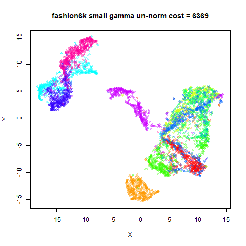
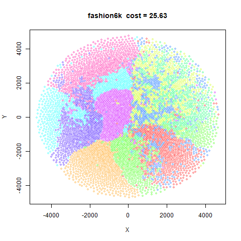
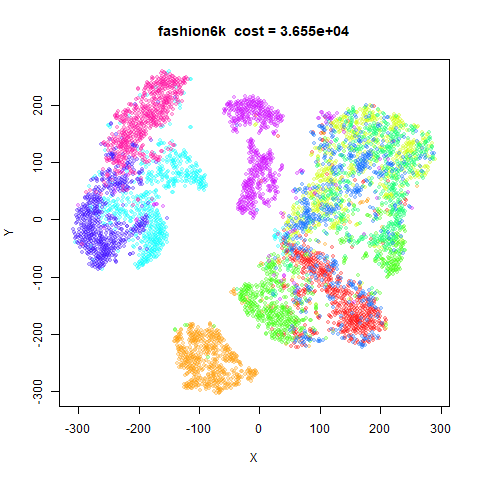
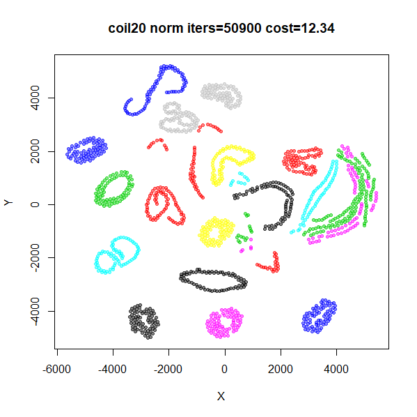

This article retains its original experiments and examples. For current package usage, see the usage guide.
LargeVis (paper and github repo) is a
clever method that allows a t-SNE like visualization using stochastic
gradient descent, which scales much better than the Barnes-Hut
approximation to t-SNE. LargeVis does not minimize the same cost
function as t-SNE, but it is similar. There is an R package that is sadly
no longer on CRAN, but can be installed from github easily enough. The
lvish function that is part of uwot is close enough
to the real LargeVis for my purposes. Both of these packages replicate
the stochastic gradient descent approach to optimization, which is the
point of the method: to be scalable to large datasets. As a result, I’m
not aware of other code that has implemented the LargeVis method in an
exact gradient form.
Theory
The theory of LargeVis is covered in plenty of depth over on the theory page. Here’s a summary. An exact gradient cost function looks like:
C_{LV} = -\sum_{ij} p_{ij} \log w_{ij} -\gamma \sum_{ij} \log \left( 1 - w_{ij} \right)
where p_{ij} are input probabilities generated in the same way as t-SNE (perplexity, averaging, normalization) and w_{ij} are output weights, also defined in the same way as t-SNE. \gamma is weight factor for the repulsive contributions. This is something that needs to be experimented with. The default value in the SGD implementation (\gamma = 7) is way too large once you start considering all pairs of points.
The gradient with respect to the output coordinates, \mathbf{y} is:
\frac{\partial C_{LV}}{\partial \mathbf{y_i}} = 4\sum_j^N \left[ \frac{p_{ij}}{ 1 + d_{ij}^2 } -\frac{\gamma }{ \left( \epsilon + d_{ij}^2 \right) \left( 1 + d_{ij}^2 \right) } \right] \left(\mathbf{y_i - y_j}\right)
where d_{ij} is the Euclidean output distance between coordinates. \epsilon is a small positive value chosen to prevent division by zero. In the LargeVis source code, it’s set to 0.1.
In an email discussion, Dmitry Kobak made the clever observation that if you set \epsilon = 1 (practically that’s not a small value so you probably shouldn’t do this, but bear with us), and you can write the gradient as:
\frac{\partial C_{LV}}{\partial \mathbf{y_i}} = \frac{4}{N}\sum_j^N \left( v_{ij} - N\gamma w_{ij} \right) w_{ij} \left(\mathbf{y_i - y_j}\right)
I have also used the substitution p_{ij} = v_{ij} / N. This expression resembles other methods’ gradients quite closely:
- t-distributed Elastic Embedding, where the t-EE parameter \lambda = N\gamma.
- if you choose \gamma = 1/Z at each iteration (where Z = \sum w_{ij}), you get the t-SNE gradient.
Un-normalized LargeVis
Does it make sense to be matching p_{ij} to w_{ij} in the cost function, rather than v_{ij}? As it happens, the LargeVis source code doesn’t actually generate the p_{ij} from the v_{ij}. It doesn’t need to, because the absolute values aren’t needed in the stochastic gradient descent method it uses: the relative values are used to generate the probability of sampling a point, and that is unaffected by scaling by N or not. In the gradient calculation, p_{ij} is set to 1, as the magnitude of the attractive force has already been accounted for by how often it’s sampled.
If we replace p_{ij} with v_{ij} to create an un-normalized LargeVis, the gradient is now:
\frac{\partial C_{ULV}}{\partial \mathbf{y_i}} = 4\sum_j^N \left( v_{ij} -\frac{\gamma }{ \epsilon + d_{ij}^2 } \right)w_{ij} \left(\mathbf{y_i - y_j}\right)
and if you set \gamma = 1 this now resembles yet another method: the t-UMAP variant of UMAP, with the following minor differences:
- the v_{ij} are generated in a different way in t-UMAP.
- the repulsive part of the gradient is scaled by 1 - v_{ij} in the exact gradient version of t-UMAP, but outside the k-nearest neighbors of point i, v_{ij} is very close to zero.
Note that the resemblance between un-normalized LargeVis and t-UMAP does not require setting \epsilon = 1. We will look at seeing what the effect of these changes is in the section Turning LargeVis into UMAP.
How to set gamma
There’s no explanation in LargeVis for what \gamma is supposed to represent theoretically, beyond that it’s a weight on the repulsion. One way to view it is to see it as a way to scale up the contribution from the missing repulsions in stochastic gradient descent, i.e. as the negative sampling rate increases, \gamma should decrease, in which case \gamma = 1 is the sensible choice for the full gradient. But in the LargeVis paper the cost function is introduced before any mention of stochastic gradient descent or sampling so it seems like it is intended to be an intrinsic part of the cost function.
Whatever the intention, we can look at how the SGD implementation balances the weight of the repulsive and attractive parts of the gradient to work out a rough value for what \gamma should be in the exact gradient case to get a similar balance.
In the SGD implementation the update for a given point i, is based around a gradient using one other “positive” point j, considering the attractive interaction with an effective p_{ij} = 1. There are n negative samples (default = 5) whose contributions are scaled by \gamma (default = 7). We could therefore say that for the default SGD LargeVis case that:
\frac{\gamma n}{p} = 35 \implies \gamma = \frac{35p}{n}
where p is the total weight of the positive interaction (in the SGD case 1) and n the total number of repulsive (negative) interactions (in the SGD case, 5).
In the exact gradient we consider all pairs of points to be involved in both contributions. Assuming we are using the normalized version of LargeVis, then the sum of the attractive contributions is 1. Meanwhile, all points contribute to the repulsive contribution with a weight independent of p_{ij}. Therefore for the purposes of the exact gradient, p = 1 and n = N.
\gamma = \frac{35}{N}
this would suggest an upper range of \gamma between ~0.1-1 for iris
and ~0.001-0.01 for mnist6k. Setting \gamma between 0.001 and 1 might be a good
starting range for the exact gradient.
The practical utility of that calculation is less important than what it says about the relative weighting of attractions and repulsions in LargeVis. The choice of \gamma = 7 in the SGD optimization looks like it’s implying that repulsions should be up-weighted, but if this rough calculation is anywhere close to reality, this translates to a \gamma < 1 in the full gradient calculation, and therefore also the LargeVis cost function.
Depending on the choice of \gamma,
this means that repulsions could be being down-weighted in LargeVis
compared to t-SNE, where, for the datasets I use with
smallvis and a perplexity of 40, the values of \gamma typically range from 1/N at the start of the optimization to ~0.1
at the end (for more on this see the t-EE page).
If that’s the case, this would explain the more compressed clusters seen
in LargeVis compared to t-SNE.
Datasets
See the Datasets page.
Settings
Here’s an example invocation for LargeVis with iris.
The choice of gamma and eta is dependent on
whether normalize = FALSE or TRUE. I find that
you will want to scale both depending on the dataset, using something in
the same order of magnitude as:
-
normalize = TRUE:eta = nrow(X) / 10andgamma = 10 / (nrow(X) ^ 2) -
normalize = FALSE:eta = 0.1andgamma = 10 / nrow(X)
Outside of these ranges I find that it’s increasingly hard to get a
satisfying optimization: early on the optimization the learning rate
needs to be quite low (e.g. eta = 0.01 with
normalize = FALSE, gamma = 1), but it can be too low for
the optimization to proceed efficiently once the initial re-arrangement
of the layout has settled down. You will therefore need to run the
optimization for longer than t-SNE. Even then, in most cases, it’s
difficult to come up with an initialization that works well. If you want
to use a larger repulsion, it’s better to start with a low value of
gamma and slowly work up to the target value, as we shall
explore below.
res <- smallvis(
iris,
method = list(
"largevis",
normalize = TRUE,
gamma = 10 / (nrow(iris)^2),
gr_eps = 0.1
),
perplexity = 40,
Y_init = "spca",
eta = nrow(iris) / 10
)
res <- smallvis(
iris,
method = list(
"largevis",
normalize = FALSE,
gamma = 10 / nrow(iris),
gr_eps = 0.1
),
perplexity = 40,
Y_init = "spca",
eta = 0.1
)
res <- smallvis(
iris,
method = list("largevis", normalize = TRUE, gamma = 1, gr_eps = 0.1),
perplexity = 40,
Y_init = "spca",
eta = 0.01,
max_iter = 10000,
epoch = 100
)
res <- smallvis(
iris,
method = list("largevis", normalize = FALSE, gamma = 1, gr_eps = 0.1),
perplexity = 40,
Y_init = "spca",
eta = 0.01,
max_iter = 10000,
epoch = 100
)Raw results
The top row shows the effect of setting gamma = 1 with
normalized (left, “norm” in the caption) or un-normalized (right,
“un-norm”) LargeVis. These were run for 10000 iterations due to the
requirement of a low value of the learning rate. These results are
hopefully reasonably converged to give a reasonable depiction of how
LargeVis ends up with gamma = 1 using an initialization
that works well for t-SNE. But it should be noted that a previous
version of this page used 5000 iterations and got results that weren’t
very converged. So these could end up changing again.
The second row uses a small value for gamma, scaled
appropriately for whether we are normalizing or not: 1/N or 1/N^2, respectively. These were able to be
run with the typical 1000 iterations.
fashion6k
 |
 |
 |
Obviously, gamma = 1 with normalized LargeVis gives
disastrously over-repulsed results. Results don’t look terrible with
un-normalized LargeVis on the smaller datasets, but things don’t look
good with mnist6k or fashion6k.
mnist6k in particular is a real mess.
Is this just a case of a bad choice of initialization. Probably not
because I’ve used a spectral initialization and random initialization
and got the same results. Nor does changing gr_eps affect
the results very much, except for the worse if you make it too small
(results not shown).
The second row results with a small gamma look better
for all the datasets and get there with one tenth of the number of
iterations.
Annealed-gamma results
Given the similarity of the LargeVis gradient to t-EE, and given that t-EE results with a larger repulsion improve notably if you start with a small value of its \lambda parameter which entirely analogous to \gamma parameter of LargeVis, we can probably expect to see an improvement by doing the same here.
For these runs, I started with \gamma set to a power of 10 closest to 1/N (using arguments I made on the t-EE page
to do with what the initial repulsion in t-SNE is like) for
un-normalized LargeVis. For normalized LargeVis, I used the power of 10
closest to 1/N^2. Then each run was
repeated with gamma increased by a power of 10 and
initializing with the final coordinates from the previous run. This was
repeated up to and including gamma = 1. For un-normalized
LargeVis, this involved 3-5 round of optimization, and 4-8 for
normalized LargeVis.
The total number of iterations allowed was 10000, the same as for the
results with gamma = 1 in the previous section. The 10000
iterations were equally divided among each gamma. If a run
finished early, the unused iterations were shared amongst the remaining
runs equally. Because runs with higher values of gamma tend
to take longer to optimize, this allowed these “spare” iterations to be
put to good use.
Choosing a good learning rate that works for all values of
gamma is tricky. For un-normalized LargeVis,
eta = 0.1 worked well. For normalized LargeVis, the best
value I found was 10/N.
For the results below, I forgot to indicate on the image title whether they were for normalized or un-normalized. Sorry. The normalized LargeVis results are on the left and the un-normalized on the right (but I will repeat this in the section titles)
fashion6k (left: normalized, right: un-normalized)
 |
 |
The un-normalized LargeVis results are obviously massive improvements. The normalized LargeVis results are less impressive, but better than what came before.
The un-normalized LargeVis results generally converged at all stages, so I am fairly confident those are representative. The normalized LargeVis results are still not fully converged even with 10,000 iterations.
That issue is exacerbated for normalized LargeVis because it starts
at a lower value of gamma compared to the un-normalized
results, but still ends at gamma = 1, stepping through
single powers of ten. Restarting the optimization loses any useful
information about the curvature that might have built up which wastes
some of the iterations, and also a large chunk of the optimization at
each gamma seems to involve the initial expansion of the
clusters until they form what look a lot like Voronoi polyhedra, before
the clusters shrink and begin to move away. Because it takes a few more
values of gamma to get to the target with normalized
LargeVis, there are fewer iterations left over for the larger values of
gamma to use.
I repeated the coil20 results with the same annealed
gamma approach, but allowing up to 100,000 iterations.
Results are indeed improved:

There is still less white space between the clusters compared to the
un-normalized results. While it’s obvious the normalized results need
further optimizing, I can’t bring myself to spend any more time on that
at the moment, so this can stand as evidence of the extra difficult of
working with normalized LargeVis (at least with larger values of
gamma). Most of the results below will therefore use the
un-normalized version.
Early Exaggeration
The annealed-\gamma results tell us
that we can probably use whatever value of \gamma we want if we are prepared to get
there by starting at a small value and increasing every few iterations.
Starting with a reduced repulsion is equivalent to a increased
attraction, which is what early exaggeration does. As this is already
part of the smallvis interface, maybe this is worth
trying.
Below are some experiments using
gamma = 1e-3, gr_eps = 1e-3. The top left image is what you
get without any early exaggeration. Top right is with
exaggeration_factor = 10, stop_lying_iter = 100, turning
off exaggeration fairly early, and then bottom left is with
stop_lying_iter = 250, the more typical exaggeration time
used in BH t-SNE. The exaggeration_factor = 10, is the
equivalent of starting with gamma set to an order of
magnitude lower than we end with. This is more aggressive than the
typical t-SNE exaggeration factor of 4. The bottom right image sees if
there is an advantage from an even stronger
exaggeration_factor = 100.
A typical setting is:
iris_lvee <- smallvis(
iris,
method = list("largevis", gamma = 1e-3, gr_eps = 1e-3, normalize = FALSE),
Y_init = "spca",
eta = 0.15,
perplexity = 40,
g2tol = 1e-7,
min_cost = -Inf,
exaggeration_factor = 10,
stop_lying_iter = 100
)fashion6k
For most datasets, early exaggeration doesn’t have much effect, which
is perhaps not too surprising as small datasets have more space to
arrange themselves. For mnist6k and fashion6k
there is a more obvious improvement to the final cost, and in
mnist6k, the visual output looks a bit better. Increasing
the exaggeration_factor = 100 doesn’t seem to help. This
means that the range of effective gamma you can use even
with early exaggeration is still quite small. For example, you won’t get
good results with gamma = 1 this way (results are identical
to not using early exaggeration). Increasing the
exaggeration_factor further will lead to issues with the
learning rate being too large in the initial exaggeration phase, as
discussed in Clustering
with t-SNE, provably.
Normalized Results vs t-SNE
I’ve used un-normalized LargeVis for most of the results above, but to demonstrate that the normalized version of LargeVis, here are some results with the following settings:
iris_lv <- smallvis(
iris,
method = list(
"largevis",
normalize = TRUE,
gamma = 10 / nrow(iris)^2,
gr_eps = 0.1
),
eta = nrow(iris) / 100,
perplexity = 40,
g2tol = 1e-7,
min_cost = -Inf,
exaggeration_factor = 10,
Y_init = "spca"
)This uses a data-dependent \gamma = 10 /
N^2 and learning rate of \eta = N /
100. With the exaggeration_factor = 10, this means
that the repulsion weight in the gradient will be 1 / N (remember that the repulsion weight is
\gamma N in the normalized version of
LargeVis) during early exaggeration, which is approximately the initial
t-SNE repulsion weight. After early exaggeration the repulsion is
reduced by a factor of 10, but remains well below the repulsion weight
of around 0.05-0.3 that t-SNE achieves with these datasets and settings.
So I anticipate that the LargeVis results will be comparable to, but
more compressed than, the t-SNE results.
fashion6k
This is more or less what I expected. Looking at the range of the
axes, the t-SNE results are more expanded but the relative location of
the clusters are quite comparable visually (with the exception of
iris where the opposite seems true). You can see that for
mnist6k and fashion6k, the clusters are more
compressed, so it’s probable that the degree of repulsions is
size-dependent.
Comparison with SGD results
Finally, let’s compare the results in smallvis to the
lvish function in uwot, which should
give results fairly close to the “true” LargeVis results. I’m not aiming
to reproduce the lvish results in smallvis
In order to make things more similar, for both smallvis
and lvish we will use a knn kernel, where for a given
perplexity PP, the nearest PP neighbors of point i get an input affinity of 1/PP and 0 everywhere else. The resulting
matrix is symmetrized as usual to get the final v_{ij} values.
For smallvis, the only difference between the previous
set of results is adding inp_kernel = "knn" to the
method list. For lvish, the settings were:
iris_lvish <- lvish(
iris,
n_epochs = 1000,
kernel = "knn",
nn_method = "FNN",
perplexity = 40,
init = "spca"
)The choice of n_epochs = 1000 was fairly arbitrary,
except it’s double what the default UMAP choice is for small datasets,
so hopefully the coordinates are reasonably well converged. Note that
lvish is a stochastic method, so exact results are
dependent on the random number seed.
The left-hand result is the smallvis result, the
right-hand result is due to lvish.
fashion6k
Results are most certainly not identical, but they’re not completely
different from each other. The chosen value of gamma could
perhaps be tweaked to make some visualizations line up better, for
example oli seems to be over-expanded in
smallvis.
Some differences may be irreconcilable: e.g. for frey,
the separation between the green cluster and the rest of the data is
always much more pronounced with lvish across multiple
random seeds, different choices of n_epochs and
learning_rate. For that dataset, even when using
smallvis to optimize the output of lvish, I
was unable to find a value of gamma which didn’t result in
a large amount of re-arrangement of the coordinates. For
coil20 there seems to be more expansion with the SGD
results and the three clusters (black, cyan and blue) on the right hand
side of the plots are pushed further, similarly to the situation with
frey.
mnist6k and fashion6k also show a slightly
different relative arrangement of clusters. This may be a limitation of
the SGD implementation in terms of representing the LargeVis cost
function as implemented in smallvis, but this is a mystery
I will leave for another time. If it turns out to be due to a bug in
uwot, I will regenerate these results.
However, we see similar overall ranges of coordinates (based on looking at the axis labels), so this is good enough evidence for me to confirm that the LargeVis repulsion is substantially down-weighted compared to t-SNE.
Conclusions
LargeVis is not designed to be a practical visualization method
outside of its stochastic gradient descent implementation, so the fact
that it’s not as easy to use in smallvis compared to t-SNE
isn’t very surprising.
Some general observations are:
- Despite sharing a lot of concepts, an un-normalized method like LargeVis is hard to optimize using the techniques that work with t-SNE.
- The problem is both with the optimization method (hyper-parameters including learning rate) and initialization.
- For initialization, I’ve tried increasing the standard deviation of the initial coordiantes (whether using PCA, spectral methods or random) to increase the initial inter-point distance and avoid large gradients, but I was unable to find a useful setting.
- The balance of repulsions versus attractions in the t-SNE family of methods is critical.
- Methods which don’t start the optimization with attractions hugely up-weighted will have a hard time producing useful results.
- t-SNE automatically increases the repulsion as the optimization proceeds, which is why it can produce output with more expanded clusters successfully.
- Early exaggeration helps t-SNE with this. It’s less useful for methods like UMAP or LargeVis because the repulsions don’t get dynamically re-weighted.
- As presented in the LargeVis paper, it’s easy to be misled by the \gamma value in the cost function. Its value > 1 in the stochastic gradient descent optimization, suggests it is up-weighting repulsions relative to the attractive forces.
- Once you recast the SGD settings in terms of the exact gradient, it’s actually strongly down-weighting the repulsions.
- This is still true even when the SGD \gamma = 1, which is effectively what UMAP does.
- This implies that with UMAP’s default settings, its cost function actually contains an implicit \gamma \ll 1.
- In t-SNE, exaggeration is the same as decreasing the repulsive interactions, which is equivalent to introducing \gamma < 1 into the repulsive part of the t-SNE gradient (ignoring a constant scaling of the gradient which can be absorbed into the learning rate). This is why t-SNE with late exaggeration looks like UMAP and LargeVis.
- Therefore t-SNE with exaggeration permanently turned on should give you a close equivalent to (the stochastic gradient descent implementations of) LargeVis or even UMAP visualizations, subject to which implementation provides you with the scalability and features you need.
Turning LargeVis into UMAP
April 26 2020: Dmitry Kobak compared the results above to what I reported about UMAP, and given how close LargeVis should be to UMAP (especially in the t-UMAP form), thought that there were some more things that needed explaining, especially around the results when \gamma = 1. It turns out that he was correct. This new section goes into a bit more detail on the specifics of what separates UMAP from LargeVis.
The results above make clear that having an adjustable \gamma value is important to get good
visualizations, and that you probably want \gamma < 1. This seems to conflict with
UMAP, which has no \gamma in its cost
function. It does appear in the Python implementation (as the
repulsion_strength parameter), but its purpose is entirely
to account for the missing repulsions due to limited sampling of
repulsions in stochastic gradient descent (this was confirmed to me in
an email from UMAP creator Leland McInnes). So in its exact-gradient
form, there should be no \gamma. That
means t-UMAP ought to behave similarly to LargeVis with \gamma = 1, which we know to be difficult to
get good results with. In the UMAP pages I do
note that UMAP and t-UMAP were quite hard to optimize: that would be in
line with my findings here that large values of \gamma make optimizing LargeVis difficult.
But we can see from the annealed-\gamma
results that with \gamma = 1, we get
very expanded clusters, which are not like the t-UMAP results on the
UMAP page, which are much more compact. Can we account for this?
The big difference between LargeVis and UMAP is in the affinity
calculation: LargeVis does the things the t-SNE way (Gaussian perplexity
calibration and symmetrization by averaging) and UMAP uses smooth knn
distances and fuzzy set union for symmetrization. Using UMAP input affinities in t-SNE doesn’t make a
big difference, but the final matrix normalization may play a role
there: before that step, apart from some minor perturbation due to
symmetrization, the t-SNE input affinities are normalized to sum to 1,
while in UMAP they sum to \log_2 k,
with k being the number of neighbors, so analogous to the
perplexity setting in t-SNE. The theory of UMAP does not
call for any normalization of input affinities to probabilities, so
unlike LargeVis there is no confusion over whether you normalize or not:
you do not.
Although the individual values of v_{ij} are between 0 and 1 in both methods,
the difference in normalization means that there is a lot more total
affinity in the smooth knn distances methods, which suggests that the
attractive interactions are up-weighted relative to the perplexity-based
calibration in t-SNE. This would mean that compared to LargeVis, there
is an effective \gamma < 1 in UMAP,
which would make the optimization a little easier. But is the reduction
in repulsion enough to make a noticeable difference? We can test this in
un-normalized LargeVis with different input kernels:
inp_kernel = "gauss" for the usual t-SNE perplexity
calibration, and inp_kernel = "skd" for the smooth knn
distances. For completeness, we’ll also look at
inp_kernel = "knn", where each of the
perplexity nearest neighbors get an affinity of
1 / perplexity, which was instructive when compared to skd
in t-SNE. We’ll also look at averaging (symm = "av") versus
fuzzy set union (symm = "fuzzy"). This made little
difference with t-SNE, but perhaps the lack of normalization will reveal
larger changes.
The results below will be done at two perplexities:
perplexity = 40, which is a typical value used in t-SNE,
and perplexity = 15, which is closer to the sort of value
used in UMAP. For the input_kernel = "skd", the
perplexity parameter is interpreted as the number of
nearest neighbors.
Rather than go straight to a fully UMAP-like setting with
gamma = 1, we’ll use values of gamma that gave
reasonable visualizations based on the previous results: \gamma = 10 / N with an initial exaggeration
factor of 10 for 100 iterations. An example for iris with
perplexity = 15:
iris_ga15 <- smallvis(
iris,
method = list(
"largevis",
gamma = 10 / nrow(iris),
gr_eps = 0.1,
normalize = FALSE,
inp_kernel = "gauss",
symmetrize = "average"
),
eta = 0.01,
Y_init = "spca",
perplexity = 15,
g2tol = 1e-7,
min_cost = -Inf,
exaggeration_factor = 10
)In the results below, the first row uses t-SNE-like perplexity calibration (the LargeVis default). The second row uses smooth knn distances (the UMAP default). The third row uses the k-nearest-neighbors perplexity calibration.
The left hand column uses the averaging symmetrization (LargeVis default), the right hand column uses fuzzy set union (UMAP default).
Results for perplexity = 40 are shown first, then
perplexity = 15 in a second section
Kernel + Symmetrization Results: Perplexity 15
fashion6k
For the most part, the effect of symmetrization is almost impossible
to detect without peering closely at minor changes. If you look at the
knn results for frey with
perplexity = 15, you’ll see that there’s a small
green/orange cluster of points in the middle of the plot, which is off
to the left in all the others. You know things are bad when you’re
reduced to noticing that kind of thing. A larger change can be seen with
mnist6k with perplexity = 40, where the cerise
(thank you name that
color) and green cluster in the lower left get entangled with each
other when using the fuzzy set union symmetrization. Apart from that,
symmetrization does not seem like a big deal with un-normalized
affinities.
Also, it doesn’t seem like new behavior in either symmetrization of
the input kernel emerges when changing from perplexity = 40
to perplexity = 15, so I will mainly concentrate on the
effect of input kernel with perplexity 40, as that lines up with the
other LargeVis results on this page.
When looking at input affinities in t-SNE, the smooth knn distances
results were somewhere between the Gaussian kernel and the knn kernel.
Without matrix normalization, that no longer seems to be the case. There
is now a noticeable difference in the amount of repulsion for skd versus
gauss (and knn) affinities, with the skd results showing noticeably
tighter clusters for iris and oli (also in
s1k where the clusters show a more “peaked” or slightly
triangular shape), although for coil20 the knn and skd
results are quite similar. However what is noticeable for nearly all the
plots if you look at the ranges on the axes of the plots is that the skd
results take up a much smaller extent. This would seem indicative of a
smaller relative repulsion compared to the other kernels.
Initializing t-UMAP and LargeVis from Largevis
So far we’ve seen that the smoothed knn distances input affinities lead to more compressed results than the typical LargeVis Gaussian kernel for a given value of \gamma. However we were using quite low values of \gamma suitable for creating decent visualization with the Gaussian kernel. Do these results hold up when \gamma = 1, which is the effective \gamma used in UMAP?
To test this we are going to focus on just mnist6k and
fashion6k, which are the largest datasets and the ones
which are most obviously badly affected by using \gamma = 1 without very careful
initialization. Also, I am going to switch to using
perplexity = 15 now, because I’m now interested in
reproducing more UMAP-like behavior with LargeVis.
For a given input kernel, we will run an un-normalized LargeVis
optimization with gamma = 1. This is going to be difficult
to get good results, so we will also use an
exaggeration_factor = 10. Also, we’re going to set the
learning rate fairly low, to eta = 0.001, because I’ve
noticed that early on in the optimization, there are quite large
gradients that can lead to initial distortions (e.g. one or two outlier
points that have been displaced a long distance relative to the rest of
the data). The visualizations do recover, but as the local
minimum they will end up could be quite far from the initial trajectory,
which might complicate looking at the final results. To compensate for
the lowered the learning rate, we’ll use max_iter = 10000,
i.e. ten times long as usual.
We will carry out two runs for each dataset, with
input_kernel = "skd" and
input_kernel = "gauss" (we won’t look at
input_kernel = "knn" so we have less results to sift
through, but also because this current set of experiments take so long
to complete). My expectations are:
- Neither results will look that great.
- The
input_kernel = "gauss"results will look worse than theinput_kernel = "skd"results.
Then we will use the final coordinates from the LargeVis run to initialize two new optimizations. The two methods are:
- t-UMAP. With the
skdkernel initialization, t-UMAP and LargeVis should be very, very similar. So as long as the LargeVis optimization was far enough long to provide a good initialization, I expect the t-UMAP results to not differ very much from the starting point. On the other hand, thegaussinitialization should be a worse initialization for t-UMAP and I would expect to see a larger change. - LargeVis again with the same input kernel parameter as in the first LargeVis run. Apart from restarting the adaptive optimization parameters this is like running a 20,000 iteration optimization. This is more of a control run to ensure that 10,000 iterations was sufficient to get a good initialization for t-UMAP and to track any further changes to the layout that would have occurred anyway. Mainly this is to account for the scenario where LargeVis with the Gaussian kernel gives a bad output, and running t-UMAP on it substantially improves it. Do I expect this to happen? No. But if it did, it would leave the question open as to whether LargeVis just needed longer to optimize those coordinates and would have got there as well as t-UMAP did.
These will also be run for 10,000 iterations and the same learning rate.
To summarize, there will be two sets of three visualizations each:
- An initial LargeVis run with
inp_kernel = "gauss". - A LargeVis run with
inp_kernel = "gauss"initialized from LargeVis in step 1. - A t-UMAP run initialized from LargeVis in step 1.
Then we will repeat all that but with inp_kernel = "skd"
in steps 1 and 2. Got it? No? Eh, I did my best.
Here’s an example of the settings we’ll use for the three steps using
mnist6k and inp_kernel = "gauss"
mnist6k_lv1 <- smallvis(
mnist6k,
eta = 0.001,
method = list(
"largevis",
gr_eps = 0.1,
normalize = FALSE,
inp_kernel = "gauss",
symmetrize = "fuzzy",
gamma = 1
),
Y_init = "spca",
perplexity = 15,
g2tol = 1e-7,
min_cost = -Inf,
exaggeration_factor = 10,
max_iter = 10000,
epoch = 100,
tol_wait = 2000
)
mnist6k_lv2 <- smallvis(
mnist6k,
eta = 0.001,
method = list(
"largevis",
gr_eps = 0.1,
normalize = FALSE,
inp_kernel = "gauss",
symmetrize = "fuzzy",
gamma = 1
),
perplexity = 15,
verbose = TRUE,
max_iter = 10000,
epoch = 100,
Y_init = mnist6k_tu2,
tol_wait = 2000
)
mnist6k_tu3 <- smallvis(
mnist6k,
eta = 0.001,
method = list("tumap", gr_eps = 0.1),
perplexity = 15,
verbose = TRUE,
max_iter = 10000,
epoch = 100,
Y_init = mnist6k_lv1,
tol_wait = 2000
)I use the tol_weight = 2000 parameter here, which
prevents stopping the optimization before iteration 2000 (after which
the final momentum has kicked in for a few hundred iterations). This is
to stop the optimizations in steps 2 and 3 from prematurely converging
if the adaptive learning rates were taking a while to make progress.
Also gr_eps = 0.1 for all methods. I did some preliminary
checking to see if this was interfering with accurate gradient values
and preventing convergence but it didn’t seem to be an issue.
Below the results on the left show the Gaussian kernel and results on the right show the smooth knn distances kernel. Row 1 is the initial LargeVis result, row 2 is the LargeVis result initialized from the first LargeVis result, and row 3 is the t-UMAP result initialized from the first LargeVis result.
fashion6k
mnist6k results are the most instructive to look at, as
the Gaussian kernel gives the worst results initially (top left), so any
improvement is easier to see. First, note that switching to the smooth
knn distances with LargeVis (top right) does help quite a bit, so that
behavior seems to hold up even at higher \gamma values. Results are still far from
perfect however, with several clusters split.
The middle row is from running LargeVis for another 10,000
iterations, to check if the top results are converged. And there are not
major changes. There is certainly some improvement to the
inp_kernel = "gauss" results (middle left), but still a
long way from what we would like to see. The
inp_kernel = "skd" results also improve with some clusters
being unsplit. This is important for evaluating the t-UMAP results as
that means we can’t attribute these improvements to t-UMAP
specifically.
The t-UMAP results are on the bottom row. First, the effect of the smooth knn distances kernel on the gaussian kernel input (bottom left) is very noticeable: results are much cleaner looking than was achieved by just running LargeVis for longer, although the overall arrangement of the visualization is unchanged. As expected, the clusters are smaller, tighter and more well-separated.
On the bottom right we see very little difference from the t-UMAP
results compared to the LargeVis results (center right). If you look
very closely you’ll see that the fine structure within each cluster
seems more pronounced: i.e. the holes inside each cluster are slightly
larger. This can be explained by the extra 1 -
v_{ij} weighting factor that exists in the repulsions for UMAP
compared to LargeVis: The affinity matrix with smooth knn distances is
sparse by design so for most pairs of points the repulsion is identical
between LargeVis and UMAP. However, for close neighbors in the input
space, there is a non-zero v_{ij} so
there is an extra down-weighting of repulsions. This pulls the neighbor
points closer together, leading to the slightly lower homogeneity inside
the clusters. The final cost values in the caption on the bottom row
confirm that initializing t-UMAP from input_kernel = "skd"
LargeVis results not only leads to more pleasant-looking
initializations, but a lower cost.
The fashion6k results confirm the observations above,
albeit in less emphatic fashion.
An obvious big difference between the smooth knn distances kernel and
the Gaussian kernel is the attractive interactions are stronger by a
factor of \log_2 PP (where PP is the perplexity), which should be the
same as reducing \gamma by the same
amount (e.g. setting approximately gamma = 0.25) and then
increasing the learning rate accordingly:
mnist6k_lvg <- smallvis(
mnist6k,
eta = 0.005,
method = list(
"largevis",
gr_eps = 0.1,
normalize = FALSE,
inp_kernel = "gauss",
symmetrize = "fuzzy",
gamma = 1 / log2(15)
),
Y_init = "spca",
perplexity = 15,
g2tol = 1e-7,
min_cost = -Inf,
exaggeration_factor = 10,
max_iter = 10000,
epoch = 100,
tol_wait = 2000
)This looks a lot more like the first skd result for (top
right image for mnist6k) than the original
gauss kernel result (top left), so a difference in
effective gamma should be considered when comparing
LargeVis to UMAP. However, the difference in the distribution of the
affinities (i.e. Gaussian versus the truncated exponential) doesn’t seem
to be critical.
mnist6k perplexity 40
To end this section, here are the mnist6k results with
perplexity = 40:
These are pretty similar to the perplexity = 15 results
in terms of the size and spacing between the clusters, so there doesn’t
seem to be a large effect of perplexity on the overall shape of the
embedding. The green, cyan and magenta clusters in the middle of the
plot are entangled in a different way to the
perplexity = 15 results. I looked to see if initializing an
extra t-UMAP optimization with perplexity = 15 could
un-entangle them, but that is not the case.
Conclusions (Again)
When I was looking at using UMAP input affinities in t-SNE, I concluded that those findings (that nothing made a huge difference) wouldn’t necessarily transfer to un-normalized methods, especially with regard to smooth knn distances. It turns out that this is the case.
- The use of smooth knn distances in the input affinity means that
UMAP has a smaller effective repulsion than LargeVis with its Gaussian
input kernel and
gamma = 1. With the default parameters of using 15 nearest neighbors, this is equivalent to approximatelygamma = 0.25in the LargeVis case. - t-UMAP results will therefore not resemble un-normalized LargeVis
with
gamma = 1(they should be less spread out) and won’t be quite so hard to optimize. - It’s still quite hard to optimize though.
- There are lots of things that make optimizing UMAP and LargeVis
difficult in their exact gradient form: setting the correct
gr_epsvalue to avoid division by zero, balancing repulsive and attractive interactions, using a good initialization, learning rate. Lots of these considerations are problems for any method, including t-SNE, but they are particularly thorny for un-normalized methods. - UMAP is actually at a disadvantage over LargeVis when it comes to the exact gradient optimization: we don’t have a gamma value to modify. An alternative is to use t-SNE-style early exaggeration and multiply the input affinities by a constant factor, but because the UMAP cost function has a \log[(1 - v_{ij}) / (1 - w_{ij})] in it so you have to be careful how that is carried out, e.g. update for the purpose of gradient calculation, but not for the cost function calculation and be careful with any early stopping criteria that use the cost function.
- However you do it, as we have seen, there are limits to how effective a one-off boost to the repulsion is with un-normalized methods once \gamma becomes large: either the boost is too small to give the desired effect, or the learning rate has to be made very small to accomodate the very different scales of the gradient before and after the exaggeration. A different adaptive learning rate method to the t-SNE Delta-Bar-Delta method (or changes to the parameters) may be needed, which is a lot of work.